The Main Focus of this Lab
- In this lab, you will learn to use your logical thinking skill to solve a series of problems
- The main focus of the lab is the thinking process, rather than your programming skills
What you will learn in this lab
- You will gain experience in the following areas:
Topic Computer Science/ Programming Concept Using state diagrams Designing Python code based on state diagrams Making decisions Writing If statements ( if ... elif ... else ...)Using Functions Returning values from a function using returnUsing global variables inside a function Lists, Tuples and Strings Using a list to store strings Using """ ... """to build strings with multiple lines of content
Overview
Video for Overview
- In this lab you will work on a robot game
- Your objective of the game is to help the robot find the exit in maps with different layouts
- You need to use your logical thinking skill to find the solutions for different maps
- To help you do that, we will teach you to use state diagrams
- A state diagram allows us to think about what happens in a system (or in a program) in a visual way
- Here is a video showing the game (for Task 4) being played (there is no sound for the video):
Getting Started
- Some files are given to you as a starting point
- Three Python files:
- robot_game.py
- game_lib.py (don't change this file!)
- game_map.py
- Four images:
- You can obtain all files by downloading this compressed file robotlab_start.zip (right click on the link, select 'Save Target As' or something similar) into your local hard disk
- All files have to be in the same folder
- To uncompress this zipped file after it is downloaded:
- For Windows
- Don’t double-click the zip file directly in Windows
- You MUST uncompress this file by right-clicking the downloaded file, and 'Extract All...'
- Then select the folder in which you want to put all related files
- The files will be here after they are uncompressed
- For Mac, you just need to double-click on the compressed file, and the folder with the same name as the zipped file will appear
- You only need to change
robot_game.py(for the game logic) andgame_map.py(for adding new maps), but don't change anything ingame_lib.py!
{kind=link}
{kind=link}
{kind=link}
{kind=link}
Lab Content
- Here are the steps for building this project:
- Understanding the game
- 1.1. What the robot can do
- 1.2. How the robot works in the program
- 1.3. Commands you can use in the making decision functions
- 1.4. The maps
- Working on task 0
- Working on task 1
- Working on task 2
- Working on task 3
- Working on task 4
- 6.1. Another approach
- 6.2. The state diagram
- Adding new maps to the game
- Submission
Illustration
- The following tables describe the usage of the files in the lab:
Python Files Usage robot_game.py - This is the main program of the robot game
- You write code here to help the robot move through a map and get to the exit
game_lib.py - This file provides different functions to make the game work
- It sets up variables and the turtle window for the game
- Don't change this file!
game_map.py - This file stores the maps that you can use in the game
- Some predefined maps have been given to you in this file
- You add maps in this file to make sure your robot can work with different maps
Image Files Usage 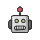robot_north.gif - This image shows when the robot is moving north
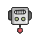robot_south.gif - This image shows when the robot is moving south
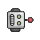robot_east.gif - This image shows when the robot is moving east
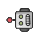robot_west.gif - This image shows when the robot is moving west
- The following diagram shows the structure and relationships among the Python programs and their content:
- You don't really need to understand all of this
- For example, you don't need to understand the code in
game_lib.py - You will work mostly in
robot_game.pyand then add some maps ingame_map.py - Don't change
game_lib.py!
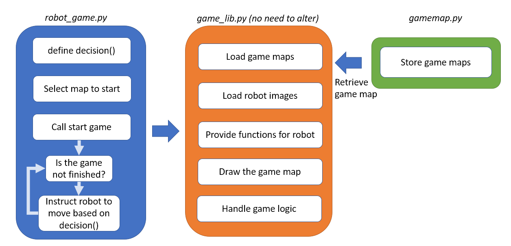
Click on the image to see it in its original size
{kind=link}
1. Understanding the game
Video for Section 1
- The objective of the robot game is to guide the robot to get to the exit of a given map
- You start the game by running the Python program
robot_game.py - After running the program, you will see a map with the robot inside, for example, like this:
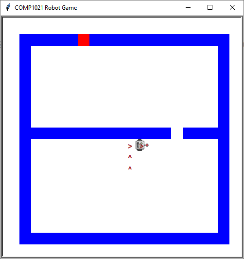
Click to show this image at normal size - The map is constructed using square blocks
- For example, the map shown above has 19 rows and 19 columns of blocks
- The game has five types of blocks:
- The robot block, showing where the robot is using one of the robot images
- Blue block, indicating a wall
- Red block, indicating the exit of the map
- White block, indicating empty space that has not been visited by the robot before
- Block with Arrows, indicating empty space that has already been visited by the robot
- The arrow in the block indicates how the robot moved when the robot left that space
- You will complete the program so that the robot can automatically get to the exit of the map, i.e reach the red block
{kind=link}
1.1. What the robot can do
- You need to help the robot get to the exit by telling it what to do
- However, the robot is not very clever
- It can only detect whether a wall is present in the four directions (North/South/East/West) around it
- That means it cannot 'see' anything further than one block away from those directions
- To understand what the robot can see, you can press the 'r' key during the game to visualize its visible area
- You can press the key again to go back to the map view
- On the other hand, the robot can only move by one block at any one time in one of the four directions (North/South/East/West)
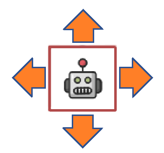
- It cannot move forward a few blocks at a time in the map quickly and it certainly cannot move through walls
| Non-Robot View | Robot View | |
|---|---|---|
| 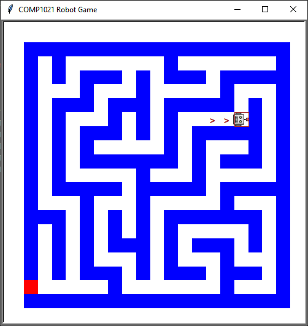 | ← Press 'r' → | 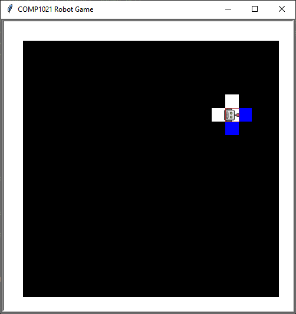 |
| Click to enlarge the images | ||
{kind=link}
{kind=link}
1.2. How the robot works in the game
- Based on what the robot can see and how it can move, you need to work out some code to guide the robot to get to the exit
- You will write the code inside
robot_game.py - In this lab, you need to work on a total of 5 tasks, from task 0 to task 4
- Inside
robot_game.py, each task has its own function that you need to work on:# This is the function for task 0 def makeDecisionForTask0(): return "NORTH" # This is the function for task 1 def makeDecisionForTask1(): global currentStateForTask1 # You need to add your code here for task 1 return "NORTH" # This gets extended with your logic # This is the function for task 2 def makeDecisionForTask2(): global currentStateForTask2 # You need to add your code here for task 2 return "NORTH" # This gets extended with your logic # This is the function for task 3 def makeDecisionForTask3(): global currentStateForTask3 # You need to add your code here for task 3 return "NORTH" # This gets extended with your logic # This is the function for task 4 def makeDecisionForTask4(): global currentStateForTask4 # You need to add your code here for task 4 return "NORTH" # This gets extended with your logic - For example, the following function,
makeDecisionForTask0(), has been given to you for task 0:def makeDecisionForTask0(): return "NORTH"- It contains one line of code and it always returns
"NORTH" - That means the robot will repeatedly go to the north
- It contains one line of code and it always returns
- These 'making decision' functions are the 'brain' of the robot
- To get to the exit of the map in each task,
the robot keeps on asking the corresponding function to give it a decision on where to move, i.e.:
- In task 0, the robot will ask the
makeDecisionForTask0()function - In task 1, the robot will ask the
makeDecisionForTask1()function - And so on
- In task 0, the robot will ask the
- Then, the function returns the direction that the robot should move to, or not move at all:
- It returns
"NORTH"to tell the robot to move north - It returns
"SOUTH"to tell the robot to move south - It returns
"EAST"to tell the robot to move east - It returns
"WEST"to tell the robot to move west - It returns
"NONE"to tell the robot to stay in the same place, i.e. not moving
(note that the return value always contains capital letters only)
- It returns
- The game asks these functions to help the robot make a decision roughly 10 times a second
(the program may run slower than 10 times a second as the turtle takes quite some time to draw the map) - Therefore, if you change the code of these functions, you will be able to change the way the robot moves inside the maps
- If you can help the robot successfully reach the exit, the game will be over and a message will be shown like this:
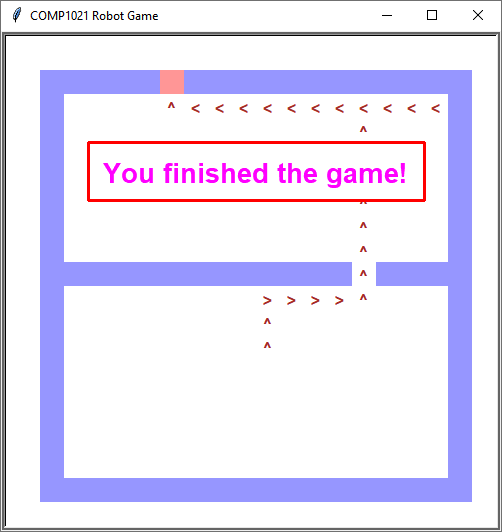
Click to show this image at normal size
{kind=link}
1.3. Commands you can use in the making decision functions
- In this game, you can only use the robot's capabilities to work on the map (see section 1.1. What the robot can do)
- That means you can only see what the robot can see and ask the robot to move to where it can go:
- You can only see if there is a wall one block away in the north, south, east and west directions of the robot, and
- You can only move the robot one block in one of the north, south, east and west directions at any one time
- To see the surroundings, you can use the following given functions inside the making decision functions:
- When you work from Task 1 to Task 4, you will write some clever code using the above functions to help the robot get out of different maps
| Function | Usage |
|---|---|
northIsWall() | It returns True if the robot detects that the north side is a wall, or False otherwise |
southIsWall() | It returns True if the robot detects that the south side is a wall, or False otherwise |
eastIsWall() | It returns True if the robot detects that the east side is a wall, or False otherwise |
westIsWall() | It returns True if the robot detects that the west side is a wall, or False otherwise |
1.4. The maps
- There are 5 types of maps that the robot (i.e. you) has to deal with
- You start with a simple map and progressively work on harder maps
- We divide the types of maps into 5 different tasks
- Here is a description of the 5 tasks
- Task 0.
- Task 1.
- Task 2.
- Task 3.
- Task 4.
- You have a lot of maps to work with in the given code
- In the rest of the lab, you will first work on task 0, and then work your way up to task 4
2. Working on task 0
Video for Section 2
- Let's recap what task 0 is about
Make sure you write the code inside the makeDecisionForTask0() function in this task!
- This task is quite simple because the code to help the robot in this map has been given to you already!
- You can use this task to understand how the game works
- Remember the given
makeDecisionForTask0()function looks like this:def makeDecisionForTask0(): return "NORTH"- The line of code
return "NORTH"
returns the string"NORTH"after the function finishes - That means the function always tells the robot to go north
- The line of code
- Because the exit is right above the robot in this map, the robot can get to the exit by simply going north
- The given
makeDecisionForTask0()function is able to do just that and therefore this task is done - You can make some changes to the code and see how the robot is affected
- For example, you can change the return value from
"NORTH"to"EAST", i.e.:return "EAST"
- If you do that, the robot will only move right and hit the wall, without ever finding the exit
- For example, you can change the return value from
- Starting from the next task, you will see that you need to return different values, rather than just
"NORTH"or"EAST", to guide the robot to the exit - As a reminder, you return different values by doing one of these:
- You can use "NEXT STEP" button below to visualize each step the robot should make:
- Please notice that:
- The grey rectangle you see in the web demo is equivalent to the robot you see in the Robot Game Window
- No arrows are shown on the web demo, and no gameover message will be displayed when reaching the exit in the web demo
3. Working on task 1
Video for Section 3
- Let's recap what task 1 is about
- To use a map in task 1, you need to find the line of code containing
chooseGameMap()and then change it like this:chooseGameMap("task1", 0)- The above code uses a map for task 1
- The second input, the number 0, means using the first map of the task
- For task 1, we give you three maps (0, 1 and 2) that you can use
Make sure you write the code inside the makeDecisionForTask1() function in this task!
- Here is the given
makeDecisionForTask1()function:# This is the function for task 1 def makeDecisionForTask1(): global currentStateForTask1 # You need to add your code here for task 1 return "NORTH" # This gets extended with your logic- The first line of code
global currentStateForTask1
prepares the function to use a global variablecurrentStateForTask1 - You use this variable to work on a state diagram, as we will explain below
- The second line of code
return "NORTH"
returns the string"NORTH"after the function finishes - So the function always tells the robot to go north
- The first line of code
- For the map shown above, if you use the given code, the robot will move north, hit the wall and not be able to move any further
- To make the robot more clever, you need to write your own code so that the robot can 'search' for the exit at the top
- We will use a diagram to explain what you need to do
3.1. Using a state diagram
- The diagram we use is called a 'state diagram', as shown below:
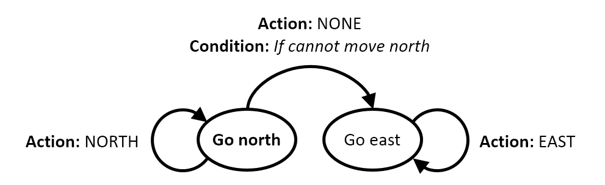
- Here is how the diagram works:
- The circles in the diagram are called 'states'
- The robot is always in one of these states
- The initial state of the robot is shown in bold
- The arrows are called 'transitions'
- The robot can switch from state to state, as shown by the arrows
- An action is typically performed when the transition happens
- Optionally, a condition may have to be fulfilled for the transition to work
- In the above example:
- The robot starts at the 'Go north' state, which is shown in bold
- The robot will switch from the 'Go north' state to the 'Go east' state, if the robot cannot move north
- Then, depending on which state the robot is in:
- When the robot is in the 'Go north' state, we always ask the robot to go north
- When the robot is in the 'Go east' state, we always ask the robot to go east
- Based on the above, the diagram means that the robot would go north initially and then, if a wall is met, turn and go east
- You can write code to represent the above diagram in the
makeDecisionForTask1()function
3.2. Writing the code for the state diagram
Step 1. Storing the state the robot is currently in
- Remember that we have a global variable called
currentStateForTask1 - You can make use of this variable to store the state the robot is currently in
- For example, you can initialize the
currentStateForTask1variable like this:currentStateForTask1 = "Go north"
- This indicates the robot is in the 'Go north' state at the start of the program
Step 2. Making the decision based on the state
- Once you know the state of the robot, you can ask the robot to move based on the state
- In the
makeDecisionForTask1()function, instead of always returning"NORTH", you need to return the moving direction based on the current state - This can be done by using an if statement, like this:
if currentStateForTask1 == "Go north": return "NORTH" elif currentStateForTask1 == "Go east": return "EAST" - The above code asks the robot to go north when it is in the 'Go north' state, and go east when it is in the 'Go east' state
Step 3. Switching the state when condition is met
- As we have said before, the robot can switch states if a certain condition is met
- In the example state diagram at the start of section 3.1, the robot changes from 'Go north' to 'Go east' when there is a wall above (cannot move north)
- In the code, you can use the
northIsWall()function to test whether a wall is to the north of the robot - Then, when the robot is in the 'Go north' state, you change the state to 'Go east' if there is a wall there, as shown below:
if northIsWall():
currentStateForTask1 = "Go east"
return "NONE"
else:
return "NORTH"
"NONE", when you ask the robot to switch the stateStep 4. Putting them all together
- From the above steps, the code you need to put inside
makeDecisionForTask1()is then:# Set the initial state to 'Go north' currentStateForTask1 = "Go north" ...after some lines of code... def makeDecisionForTask1(): global currentStateForTask1 # When the robot is in 'Go north' state... if currentStateForTask1 == "Go north": # Switch to 'Go east' if a wall is met if northIsWall(): currentStateForTask1 = "Go east" return "NONE" # Keep moving north otherwise else: return "NORTH" # When the robot is in 'Go east' state... elif currentStateForTask1 == "Go east": # Keep moving east return "EAST" - The above code implements the example state diagram (at the start of section 3.1) as the logic of the robot
- However, if you run the program with this code, you will find that the robot still cannot get to the exit
- If you run the code, it will move north, turn right at the top, go straight to the east side of the map, hit the wall and could not proceed further
- That means the example state diagram (section 3.1) is not clever enough to help the robot to get out of the map for this task
3.3. Completing the task
- You need to improve the state diagram so that the robot can go north when it is next to the exit
- The idea is to do this: while the robot is moving east, you ask the robot to go north again if the exit is to the north of the robot (i.e. can move north)
- This can be done by adding a transition between the states
- Here is the modified state diagram:
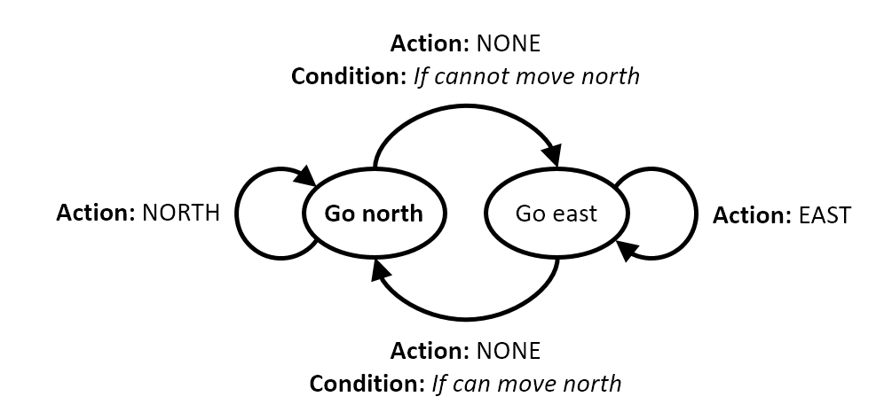
- First we start at the 'Go north' state
- If the robot cannot move north, it will turn and keep moving east
- While it is moving east, if the robot can move north, it will turn back again and keep moving north
- Using similar ideas that you have seen from the previous section, you need to write the code yourself for the modified state diagram
- After doing this, the robot should be able to reach the exit for the maps of task 1
- You can use the "NEXT STEP" button below to visualize each step the robot should make:
- Please notice that:
- The grey rectangle you see in the web demo is equivalent to the robot you see in the Robot Game Window
- No arrows are shown on the web demo, and no gameover message will be displayed when reaching the exit in the web demo
4. Working on task 2
Video for Section 4
- Let's recap what task 2 is about
- Similar to task 1, you need to find the line of code containing
chooseGameMap()and then change it like this:chooseGameMap("task2", 0)- As well as map 0, you can use map number 1 or 2
Make sure you write the code inside the makeDecisionForTask2() function in this task!
- In this task, the exit may be to the left or to the right of the robot
- In the previous task, the exit can only be on the right so this task is a little more difficult to do than the previous one
- Previously, the robot searches for the exit by turning to the right only
- Now, in this task, rather than just the right hand side, you also need to make the robot search the left hand side
- You can extend the idea from the previous task to something like this:
- Step 1. The robot moves north until there is a wall above
- If the robot sees a wall above, it turns east (go to step 2) and searches for the exit
- Step 2. The robot moves east, searches for the exit until there is a wall on the east
- If the exit is found (i.e. no wall above), the robot will go north (back to step 1) and move to the exit
- If the robot sees a wall on the east, it turns around (go to step 3) and searches for the exit
- Step 3. The robot moves west and searches for the exit
- If the exit is found (i.e. no wall above), the robot will go north (back to step 1) and move to the exit
- Step 1. The robot moves north until there is a wall above
- You need to add one more state which asks the robot to move west, with the appropriate transitions
- Then, the above logic can be represented by the following state diagram:
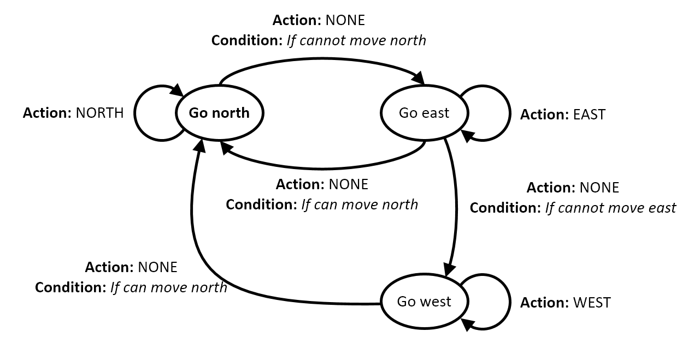
- In this task, you need to write the code to put the above diagram in the
makeDecisionForTask2()function - The state of the diagram is then stored inside the
currentStateForTask2variable - You can use the "NEXT STEP" button below to visualize each step the robot should make:
- Please notice that:
- The grey rectangle you see in the web demo is equivalent to the robot you see in the Robot Game Window
- No arrows are shown on the web demo, and no gameover message will be displayed when reaching the exit in the web demo
5. Working on task 3
Video for Section 5
- Let's recap what task 3 is about
- The first thing to do is to find the line of code containing
chooseGameMap()and then change it like this:chooseGameMap("task3", 0)- As well as map 0, you can use map number 1 or 2
Make sure you write the code inside the makeDecisionForTask3() function in this task!
- To work the way out in this task, the robot can go to each level of horizontal walls and then search for the hole in the wall
- This is very similar to what you have done in task 2, where the robot goes to the top of the map and searches for the exit at the top
- That means you just need to ask the robot to do the same thing, i.e. go north, search the east and search the west for the hole
- Once the hole is found, the robot continues to move north to the next horizontal level
- You can see the logic that you have completed in task 2 can be used again in this task
- For example, we can use the exact same idea but change the text 'exit' into 'hole', like this:
- Step 1. The robot moves north until there is a wall above
- If the robot sees a wall above, it turns east (go to step 2) and searches for the
exithole
- If the robot sees a wall above, it turns east (go to step 2) and searches for the
- Step 2. The robot moves east, searches for the
exithole until there is a wall on the east- If the
exithole is found (i.e. no wall above), the robot will go north (back to step 1) and move to theexithole - If the robot sees a wall on the east, it turns around (go to step 3) and searches for the
exithole
- If the
- Step 3. The robot moves west and searches for the
exithole- If the
exithole is found (i.e. no wall above), the robot will go north (back to step 1) and move to theexithole
- If the
- Step 1. The robot moves north until there is a wall above
- As you can see, the logic is exactly the same, with 'exit' changed to 'hole'
- As the code does not distinguish between the exit or a hole, you should be able to guide the robot to the exit using the same code that you have got from task 2
- That means you can copy the code for task 2 into the
makeDecisionForTask3()function and then make sure it works for your maps in this task - Here is a video demonstrating the movement of the robot when the above logic is implemented
6. Working on task 4
Video for Section 6
- Let's recap what task 4 is about
- The first thing to do is to find the line of code containing
chooseGameMap()and then change it like this:chooseGameMap("task4", 0)(you are only given two maps in this task, task 4)
Make sure you write the code inside the makeDecisionForTask4() function in this task!
- In this task, you work inside the
makeDecisionForTask4()function and use thecurrentStateForTask4variable - This task is considerably more difficult than the previous tasks
- In task 3, we always assume holes are in the horizontal walls above the robot
- However, there are only one-square width pathway for the robot to move
- That means we cannot use the 'go north' strategy to solve the full maze
- Because of the difficulty, we will need to adjust our idea
6.1. Another approach
- Imagine that you are in a very dark dungeon
- Your instinct would likely tell you to get hold of something to feel safe
- One way to do that is to find the nearest wall, touch and walk along the wall, instead of wandering around in open space
- As it is a one-square pathway, you can use any wall that the robot can touch
- We will use this approach to make the robot go around the map
- Let's say the robot has a pair of hands, a left hand and a right hand
- We can make the robot always touch a wall using its right hand, while walking around the map
- The same idea can be applied using its left hand but we will use the 'right hand rule' in this lab
6.2. The state diagram
- In the previous tasks, we have the 'Go north', 'Go east' and 'Go west' states
- Let's add one more state, 'Go south', to complete the four directions of movement:
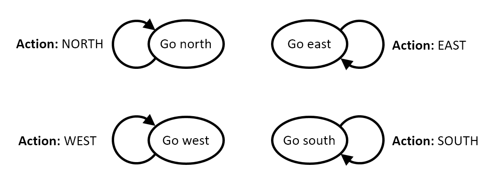
- The basic transition for each state has been shown in the above diagram
- Let's now consider how to handle the transitions between the different states
- The objective now is to ensure that the robot's right hand is touching a wall, no matter what direction the robot is heading in
- Here are examples of what can happen when the robot is in the 'Go north' state:
- A wall is on the right hand side and there is no wall above the robot:
- The robot can move forward (North)
- You can notice that robot's right hand is pointing towards East!
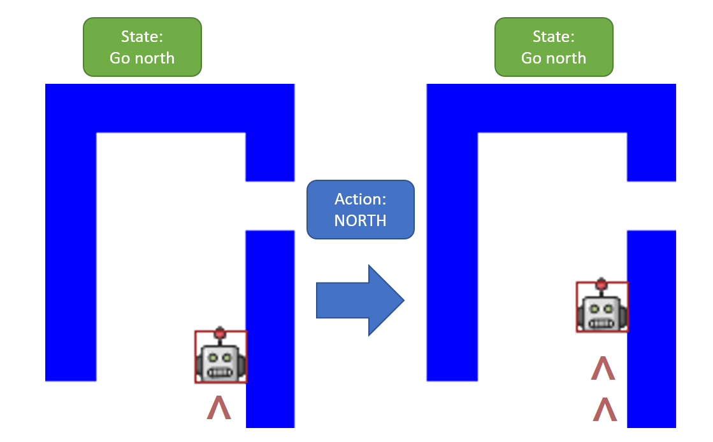
Click to show this image at normal size - A wall is on the right hand side and there is a wall above the robot:
- The robot cannot move forward (North)
- The robot needs to turn left (not right!) so that its right hand is on the wall
- You can notice that robot's right hand is pointing towards North when the robot is in 'Go west' state!
- Although the robot may not look different, after this it is now in the 'Go west' state
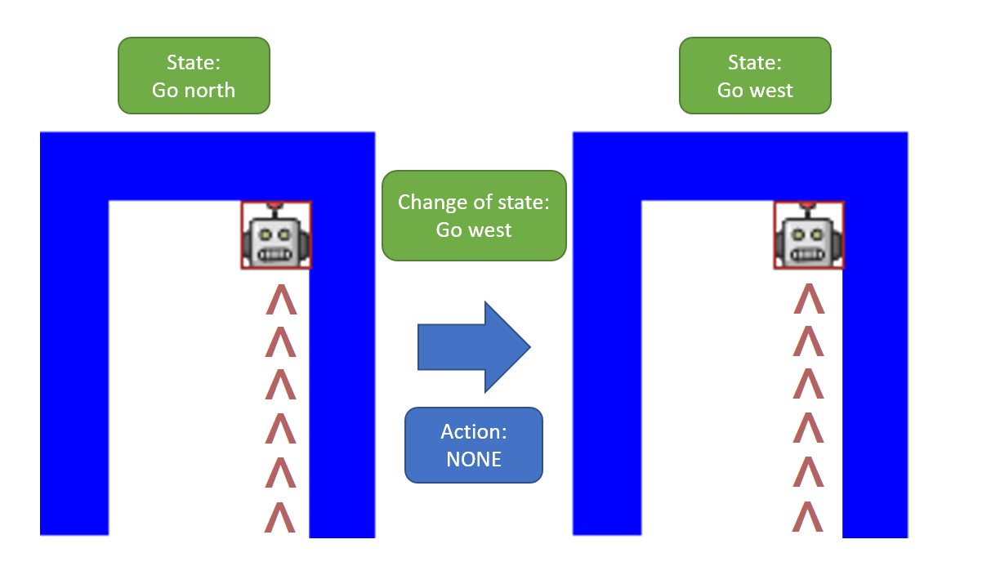
Click to show this image at normal size - A wall is not on the right hand side:
- In order to put its right hand on a wall again, the robot needs to turn right (East) and move one step forward
- You can notice that robot's right hand is pointing towards South when the robot is in 'Go east' state!
- Note that the robot is in the 'Go east' state after this
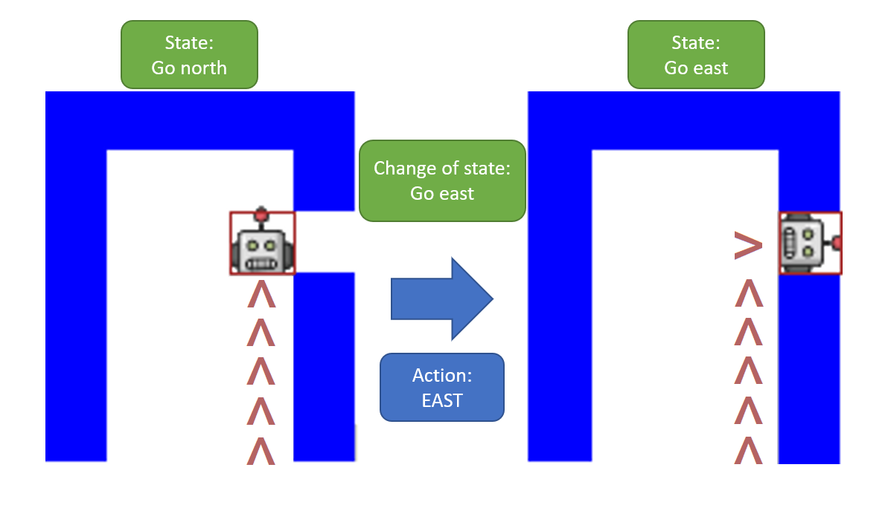
Click to show this image at normal size
- A wall is on the right hand side and there is no wall above the robot:
- As you can see there are a couple more conditions to consider for the 'Go north' state than what you have done in the previous tasks
- If you add the transitions to the state diagram, it will then look like this:
(we have focussed on the transitions of the 'Go North' state for the following image)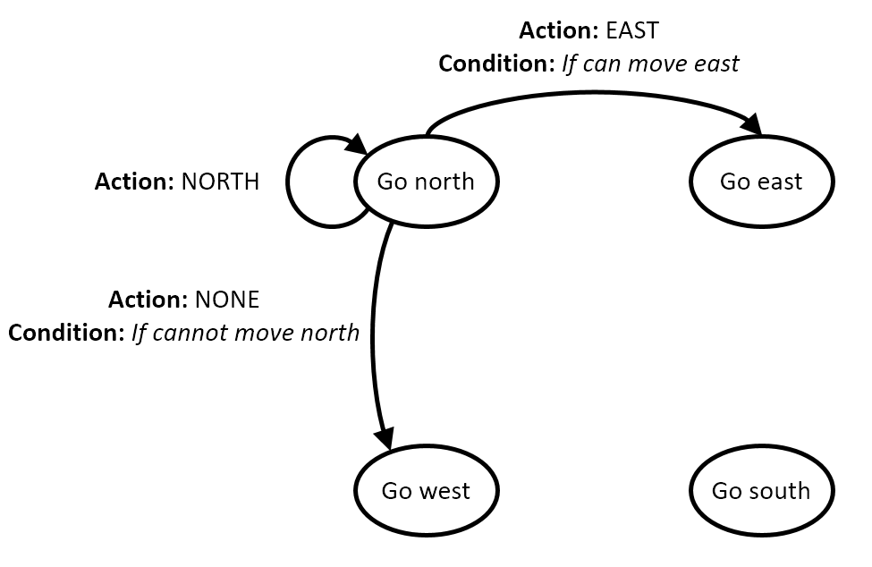
- You need to complete the state diagram by applying a similar logic to the remaining 3 states: 'Go east', 'Go west' and 'Go south'
- Once you have done that, you can write the code that represents the state diagram into your
makeDecisionForTask4()function - If you want to test your robot using a different map, you can use
this webpage to make a new one for you
- You can see how to do that lower down the page in Section 7
- Here is a video demonstrating the movement of the robot when the above logic is implemented
{kind=link}
{kind=link}
{kind=link}
7. Adding new maps to the game
Video for Section 7
- To fully test your program, you should add more maps to see if your logic works on different maps
- Your program should work with a map having a width between 7 to 39, and a height between 7 to 39
- To start with, here is a map generator to generate different maps for you
- You can choose the maps for different tasks, and create the map with different widths and different heights
- In that web page, you can generate a map and see a preview of what it looks like
- To add a map, edit
game_map.py, and add the map to the list of maps - In
game_map.py - Find this:
custom_map_for_task = "task0" custom_map = [ # # You can add your custom maps here # ]
- First, specify the task you want to use in the first line
- For example, you will write this if you want to use the task 4 logic in your custom map:
custom_map_for_task = "task4"
- For example, you will write this if you want to use the task 4 logic in your custom map:
- Then add the map into the list
- For example you use the generator to get code, like this:
"""\ BBBBBBBBBEBBBBBBBBB B B B BBBBBBBBBBBBBBB B B B B B BBBBB B BBBBBBB B B B B B B B B B B BBBBB BBB BBBBB B B B B B B BBB BBBBB B BBB B B B B B B B B B B BBB B B B BBBBB B B B B B B B BBBBB BPB B BBB B B B B B B B B BBBBBBBBBBBBBBB B B B B B BBBBB B BBB B BBB B B B B B BBBBBBBBBBBBBBBBBBB"""
- B means "Block" in the map (shown as blue square)
- E means "Exit" in the map (shown as red square)
- P means "Robot" in the map (shown as the robot icon)
- Empty means "Space" in the map
- In Python,
"""..."""is a way to store a long string with multiple lines, e.g.:song_lyrics = """\ Baby shark, doo doo doo doo doo doo Mommy shark, doo doo doo doo doo doo Daddy shark, doo doo doo doo doo doo"""
- The
\tells Python 'the code continues on the next line'
- The
custom_map = ["""\ BBBBBBBBBEBBBBBBBBB B B B BBBBBBBBBBBBBBB B B B B B BBBBB B BBBBBBB B B B B B B B B B B BBBBB BBB BBBBB B B B B B B BBB BBBBB B BBB B B B B B B B B B B BBB B B B BBBBB B B B B B B B BBBBB BPB B BBB B B B B B B B B BBBBBBBBBBBBBBB B B B B B BBBBB B BBB B BBB B B B B B BBBBBBBBBBBBBBBBBBB"""]
chooseGameMap("custom", 0)
- where 0 means 'the first one'
Submission
- You don't need to submit this work
- However, it's a good idea to keep a copy of your work for your own reference
- For example, you can put your file in your USB disk (if you have one) or email a copy to yourself